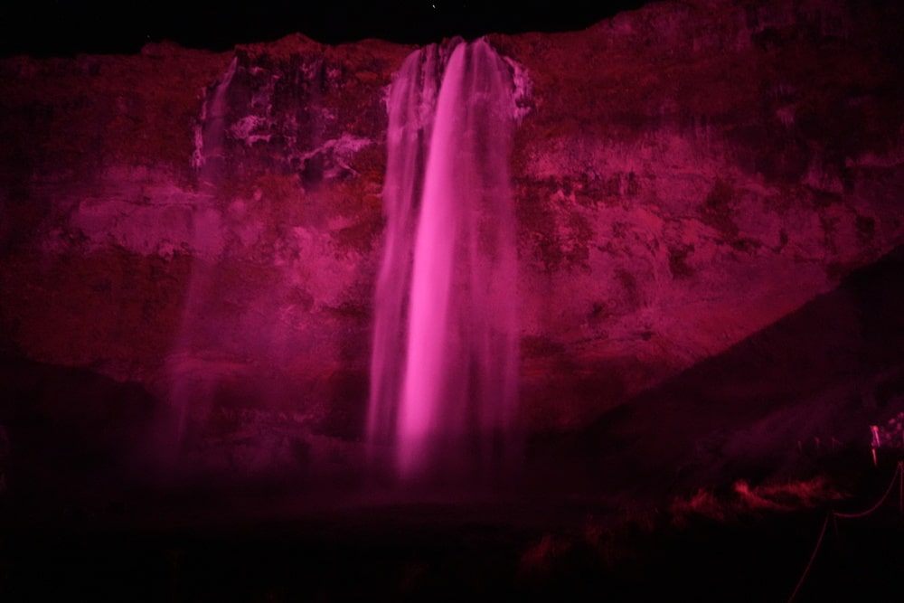
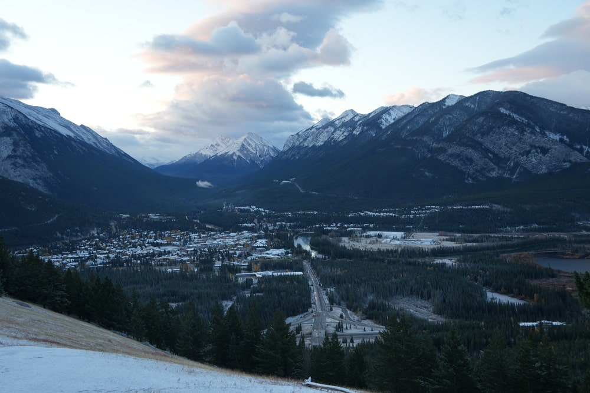

Canada
Canada was never my top dream destination. It was interesting and intriguing, but I never felt an urge to go there anytime soon. After all, I already had three trips planned for the summer (including the biggest one of my life), plus many other ideas for future. So, how did it happen? Spring 2024 - I wake up at my usual time for work (I'm lucky enough to work from home), sit down at my computer, and check my notifications. Among them was one from a website listing cheap flights: a round-trip ticket from Warsaw to Hamilton, Ontario, for $500. As usual, without overthinking, I sent the deal to my friend Mateusz. Ten minutes later, we had our flights booked.
We quickly decided that Toronto wasn't as interesting to us as the West Coast, so we booked flights to Vancouver. We left ourselves just one day in Toronto for Niagara Falls. Another bonus was a 15-hour layover in Iceland - a great chance to see at least a small part of the island. Throughout the summer, our preparations were rather slow since I was busy with other trips and work. As the departure date got closer, it also became clear that both of us would have pretty tight budgets. All these factors led us to approach this trip with no big expectations, plans, or demands - and that turned out to be the best decision we could have made.
The Beginning
The whole trip started with a train to Warsaw - nothing special. In the capital, we quickly met up with a friend, did some last-minute shopping at Złote Tarasy, and headed to the airport. As a born-and-raised Cracovian, I naturally spent those few hours complaining about how Warsaw sucks and how Kraków is superior. At the airport, we got some bad news - it turned out we'd be flying on planes with a Ryanair-like standard. For both of us, standing over 190 cm tall, that's pure torture even on a two-hour flight, let alone six. Well, we had to survive it somehow. After five hours in the air, we finally landed in Iceland.
Our plane
Iceland
It was already midnight. We quickly picked up the car, bought a double espresso (since we had a long, sleepless night ahead) and set off to see the island. In Iceland, October nights can be brutally cold (-2°C), but for us taking extra clothes just for those 15 hours was not an option, so we were freezing. We drove through the night for hours toward the town of Vík, making a stop at Seljalandsfoss waterfall along the way. That's where I saw my first-ever northern lights. Around 4 AM, exhaustion hit us hard, so we pulled over at a random roadside spot for a quick power nap. We woke up to a brightening sky. Wasting no time, we rushed up a nearby hill to catch the sunrise - and it was absolutely breathtaking.

 1) Seljalandsfoss waterfall at night 2,3) Sunrise from the nearby hill
1) Seljalandsfoss waterfall at night 2,3) Sunrise from the nearby hill
After sunrise, we quickly made our way to Vík, saw the black sand beach, and started heading back, stopping at a few more waterfalls on the way. Eventually, we reached the airport, where we got some bad news - at some point during the drive, a tiny rock had hit our windshield, leaving a small crack. Of course, we hadn't bothered with insurance because, well, "what could possibly happen in just 15 hours?" This little oversight cost us €200. Wanting to forget our not-so-budget-friendly incident, we quickly boarded our flight and set off for Canada.
Skógafoss waterfall
Niagara Falls
We landed exhausted in Hamilton, Ontario, where there was even more unpleasant surprises. First up - passport control. I ended up with an incredibly inquisitive officer, who gave me the most stressful immigration check of my life (Traumatic experience). He wasn't too pleased that we didn't have an accomodation booked yet (we only had a car rented), so he sent me for additional screening. I was very stressed - right in front of me, they were searching people suspected of smuggling drugs, straight out of a National Geographic documentary. Mateusz, on the other hand, got through with no issues, so I told him to book any accommodation ASAP so I'd have something to show them. Luckily, the officer I got next was a nice guy. He asked me a few questions, checked my bag, and let me through. Our second fuckup was the rental car. We had booked a Dodge Charger (or something similar) because we wanted to have a little fun, and for just one day, the price wasn't bad. But upon arrival, the rental company told us that they didn't even have a Charger. Instead, they handed us a “very similar” vehicle - a Kia SUV. We felt scammed, but there wasn't much we could do. After a quick Walmart trip (my first ever!), we headed to a roadside motel that looked exactly like something out of a 90s movie. We went to the beds and passed out immediately.
In a motel
The next day's plan was simple: see Niagara Falls, return the car, and catch our flight. We reached the falls quickly and found a relatively cheap parking spot. Unfortunately, it rained all day, so we were soaking wet the entire time. Niagara Falls made a great impression on us - way more impressive in real life than in photos. There were plenty of tourist attractions, but given our budget-travel mindset, we couldn't afford much. However, we were surprised to find that the iconic boats that take you up close to the falls were pretty cheap by Western standards (about $30). We gave it a shot and didn't regret it - though afterward, we had to run to the car to avoid catching a cold.
 Niagara Falls
Niagara Falls
After Niagara, we took a slightly more scenic route back to the airport. And there, waiting in the rental lot, was… a Ford Mustang. Meanwhile, our rental company told us a Kia SUV was a “similar” car to a Charger. :| We laughed about it and headed for security check.
Vancouver and British Columbia
We landed in Vancouver at 1 AM, after yet another 5-hour Ryanair-style flight. Our plan was: set up a camp on the airport couches, get some sleep, pick up our rental car at 6 AM. By the 7 AM we were already on the road, driving out of the city. Excitement was really high because, finally, we could settle down somewhere. Up until this point, we had been constantly packing, unpacking, flying, and moving. Now, we had our Toyota Corolla, which was about to be our home for the next week. As we were leaving Vancouver, the sun was just starting to rise. We grabbed a classic Canadian breakfast at a roadside diner - blueberry pancakes with maple syrup, scrambled eggs with bacon, and, of course, one of the best things about North America: unlimited coffee refills.
1) Sleeping in the Vancouver Airport 2) Breakfast in Vancouver
Our plan for the week was to take Highway 99 through the Coastal Mountains, then follow the Trans-Canadian Highway 1 all the way to the Rockies. The Coastal Mountains and Vancouver are known for their constant rain, with actual rainforests (not tropical, but still rainforests) covering the area. As a result, we were soaked most of the time. On our first day, we drove through the mountains, stopping at a few waterfalls, lakes, and even completing a hike: the Joffre Lakes Trail. I highly recommend it - it takes about 2 hours and leads past three emerald lakes, with a stunning glacier towering over the last one. Unfortunately, we couldn't hike up to the glacier itself because it was getting dark. That night, we camped at a free site in Marble Canyon, just past the Coastal Mountains.
5) Lower Joffre Lake 6) Middle Joffre Lake 7) Upper Joffre Lake
On the second day, we reached Clinton ( which turned out to be our favorite place of the entire trip). This small town is known for its horse ranches, and we were instantly captivated by its authentic, Western-movie-like atmosphere (except with cars instead of wagons). Truly a magical place. We explored some backroads around the town before heading to Kamloops, where we once again ditched the main highway for smaller roads. We ended up on a three-hour off-road adventure through the forest in our Toyota Corolla, which, let's be clear, is not a big American pickup, nor is it even 4x4. Somehow, we didn't get stuck, and eventually, found our way back to asphalt. Next we stumbled upon an antique shop, where the owner recommended a nearby provincial park. After seeing a picture of a waterfall in the area, we knew we had to make it there before dark. We sped a bit (maybe too much), but we managed to reach Helmcken Falls just after sunset, and oh boy, it was worth it. It was the most incredible waterfall of the trip - powerful, majestic, and awe-inspiring. After that, Mateusz drove us all the way to Mount Robson, where we spent the night.
1) Road to Kamloops 3) Helmcken Falls
The next day, excitement was in the air - we were finally entering the Rocky Mountains. But we weren't prepared for what we saw. That summer, Jasper National Park had suffered one of the worst wildfires in history. Everything was burnt to the ground - charred forests stretched endlessly toward the horizon. In Jasper, 3 out of 4 gas stations had burned down. The landscape felt straight out of a post-apocalyptic movie. It was a sad sight, but in the ashes, we could already see signs of new life, which gave us some hope. Heading south, we stopped at every interesting spot - waterfalls, lakes, rivers, and glaciers. In the evening, we arrived at Lake Louise, which, according to Mateusz, was one of the most famous places in Canada. Unfortunately, it was disappointing - there was a huge five-star hotel that screamed commercial tourism, renting a small canoe on the lake cost over $100 per hour, and the glacier that was supposed to flow into the lake was not even there. We quickly left and continued to Banff, where we spent the night parked near the train station (it was a baaad idea).
1,2) Burned Jasper
That was the coldest night of the whole trip - in the morning, we woke up to snow. Without leaving our sleeping bags, we drove up to a nearby viewpoint to do our morning routines. The entire day was a road trip - we first drove through Kananaskis, a beautiful scenic route that can be done in any car, then explored Kootenay National Park, and finally took Highway 95 to enter Yoho National Park, where we camped. I must say, Highway 95 was one of our favorites - quiet, peaceful, and surrounded by stunning peaks on both sides.
 1) View over the Banff 3) Scenic road from Kananaskis 5) Highway 95
The next day, we didn't have much of a plan. After a short walk around Emerald Lake (this time it's the name of the lake, not a adjective), we decided we had seen enough mountains and decided to head back toward Clinton as it was our favourite place on the entire trip. Along the way, we stopped at Glacier National Park and went to see the giant cedars, before reaching the same campsite from our first night.
1) Emerald Lake 2) Me with a big ceder
Our last day in British Columbia. In the morning, we returned to Clinton, where we grabbed breakfast. I bought a black bear claw necklace from a local artist as a souvenir, while Mateusz went thrift shopping for a flannel shirt. We also got a small hematite Buddha figure, which became our trip mascot. After a bit of wandering north to see where the road would take us, we had to turn back and head toward Vancouver for our flight. The drive wasn't too eventful - we only stopped once at a waterfall (because we had a rule: at least one waterfall per day), and then continued straight to the city. As soon as we got close to the coast, it started pouring rain. We took a quick drive around downtown, made a short stop in a park, and then went straight to the airport. Exhausted, we boarded the plane.
Roadtrip mapToronto and the Journey Home
We landed in Toronto (instead of Hamilton, where our return flight was departing from), so we had to transfer from one airport to the other. Luckily, we had a 12-hour layover, which gave us enough time for a bit of sightseeing. Even though we were exhausted, we made our way to the CN Tower and took a walk around downtown. It happened that we arrived on the day of the Toronto Marathon, so the city was buzzing with energy. We had lunch on a bench by the lake and then headed for the bus to Hamilton. Running on just a few hours of sleep over two days, we were seriously feeling the exhaustion. And we still had a 10-hour layover in Keflavík ahead of us. Thankfully, we had no intentions to wander around Iceland this time - after landing, we inflated our sleeping mats and crashed by the heaters. After a bit of rest, we were back in the air, heading to Warsaw. By the time we landed in Poland, we were completely wiped out. Fortunately, when we were booking the planes, we decided not to go back to Krakow by train and bought a 30-minute LOT flight instead. It was such a good decision. Finally, after two days of flights and layovers, we arrived in Kraków, where our friend Krzyś picked us up. Please, no more +3 layovers flights.
1) CN Tower 2) Toronto downtown 3) Sleeping in Iceland
Summary
My trip to Canada was one big unknown, and I was ready to embrace it. Looking back, I really appreciate the fact that we had no strict plans, no expectations, no must-sees, and no requirements - it allowed me to fully experience and enjoy the moment. I wasn't thinking about what I'd see tomorrow or the next day, what I was missing, or what I should prioritize - I was simply living in the present. For anyone planning a trip to Canada, I'd definitely recommend the West Coast, but I'd also advise taking the plateaus north toward Yukon rather than pushing into the overly popular national parks crowded with tourists. That's where I found the most excitement, authenticity, and untamed wilderness. As for Iceland, I have to say I was a bit disappointed. No matter how stunning the landscapes are, I just couldn't get over how expensive everything was. Seriously, I've been to expensive countries before, but this was on another level. I probably wouldn't go back unless I suddenly became filthy rich or moved there for work.
I spent some incredible days in Canada, and I'm grateful for every single one of them.
Peace, Jakub